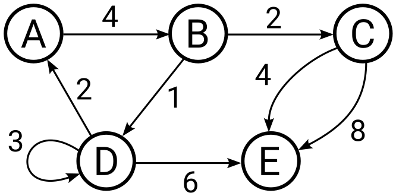

Graphes#
Définitions#
Un graphe est un couple \(G = (V, E)\) comprenant deux ensembles :
\(V\) un ensemble de sommets (vertices en anglais)
\(E\) un ensemble d’arêtes (edges en anglais), chacune étant une paire de sommets \(\{u, v\}\) avec \(u\), \(v \in V\)
Un graphe orienté est un graphe pour lequel les arêtes sont des couples \((u, v) \in V \times V\). Les arêtes d’un graphe orienté sont souvent appelées arcs. Les graphes orientés sont parfois appelés digraph par contraction de l’anglais directed graph
Un graphe pondéré (ou valué) est un graphe pour lequel un nombre positif est associé à chaque arête. Un graphe pondéré est un triplet \(G = (V, E, w)\) où \(V\) est l’ensemble de sommets, \(E\) est l’ensemble des arêtes et \(w : E \rightarrow \mathbb{R}_+\) est la fonction de pondération. \(w(e)\) est appelé poids de l’arête \(e \in E\).
Un multigraphe est un graphe où \(E\) est un multiensemble (parfois appelé sac), c’est-à-dire une sorte d’ensemble dans lequel chaque élément peut apparaitre plusieurs fois. Un multigraphe autorise plusieurs arêtes entre deux sommets identiques.
Représentation graphique#
Exemple de représentation graphique d’un multigraphe orienté et pondéré.
{kind=link}
les sommets A, B, C, D et E sont représentés ici par des cercles
les arcs sont représentés par des flèches, par exemple
l’arc allant du somment A au sommet B
l’arc allant du somment D au sommet D
le poids des arcs apparait le long de chaque arc (flèche), par exemple
le poids de l’arc allant du somment A au sommet B vaut 4
plusieurs arcs peuvent aller du même somment source vers le même sommet destination, par exemple
deux arcs vont du somment C au sommet E
Exemples d’utilisations#
Un multigraphe orienté et pondéré est un outil de modélisation et d’analyse très répandu dans les sciences de l’ingénieur.
ordonnancement de projet (diagramme de PERT)
système de transport routier, ferroviaire, ou aérien
système de distribution (eau potable, énergie électrique, hydraulique, pneumatique, géothermique …)
structure mécanique en treillis (ouvrage d’art, impression 3D, …)
système polyarticulé (cinématique …)
automate à états finis (automatisation des systèmes)
réseau électrique (lois de Kirchhoff)
routage des circuits intégrés
réseau de communication